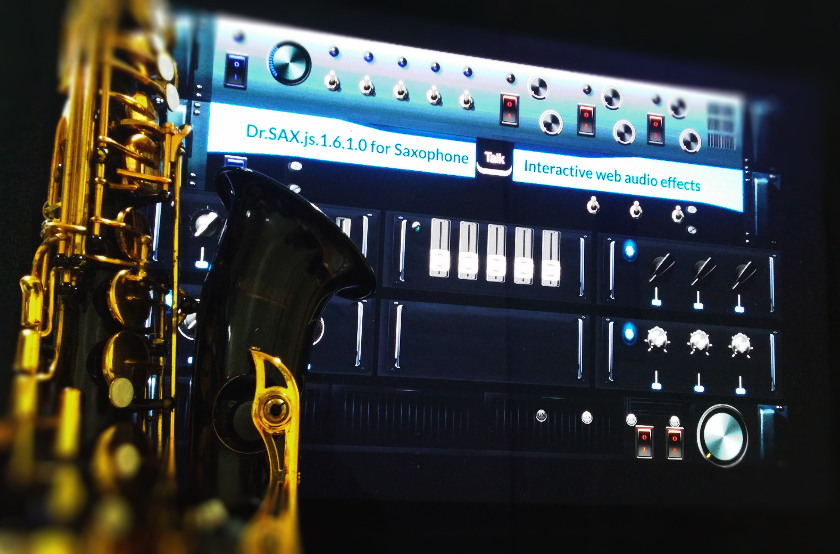
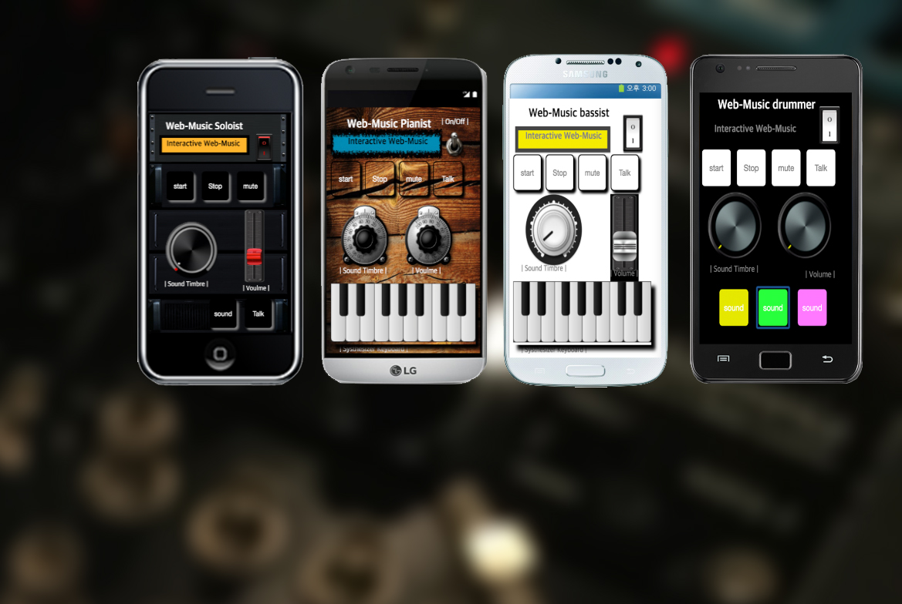
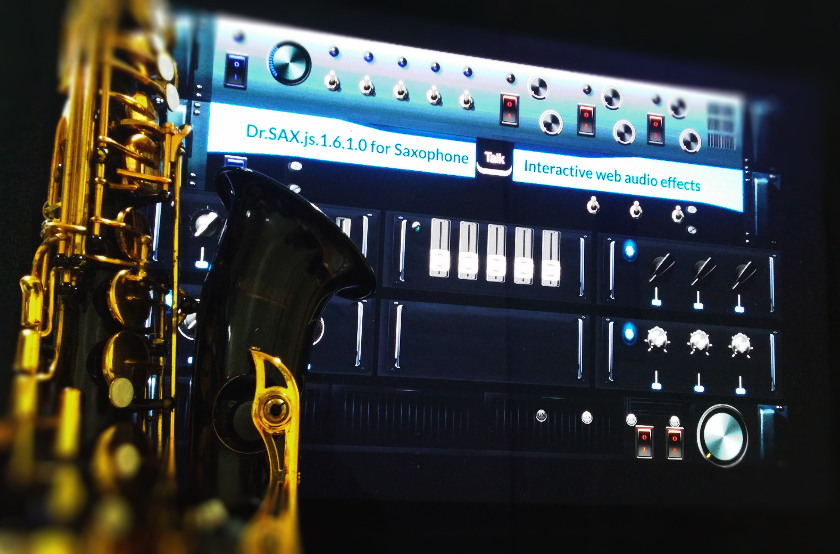
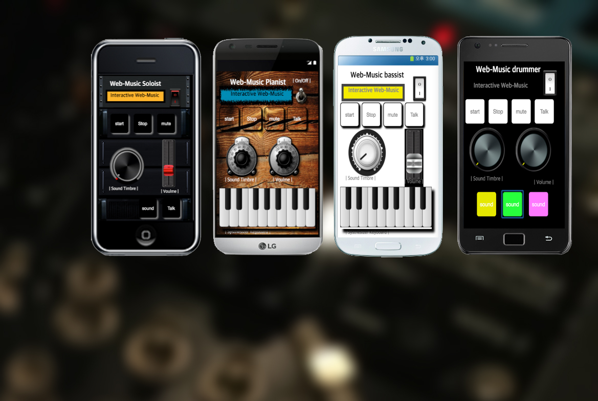
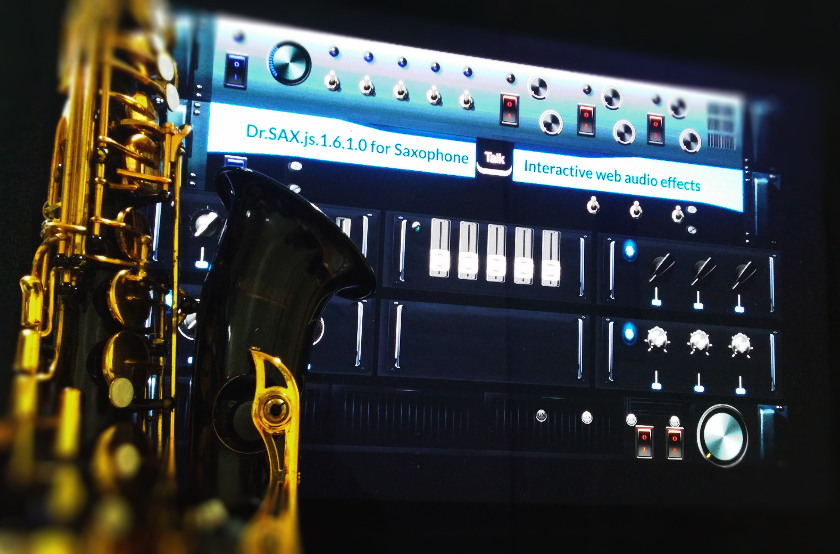
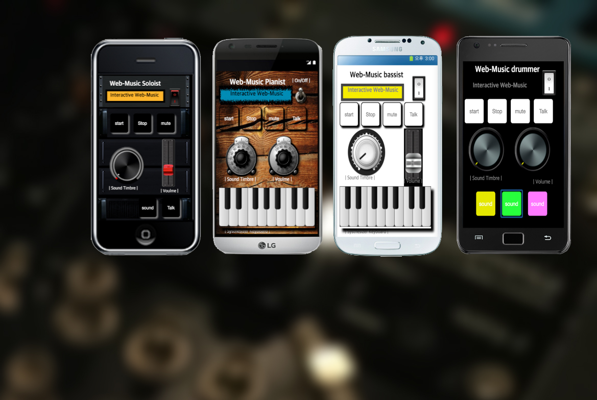
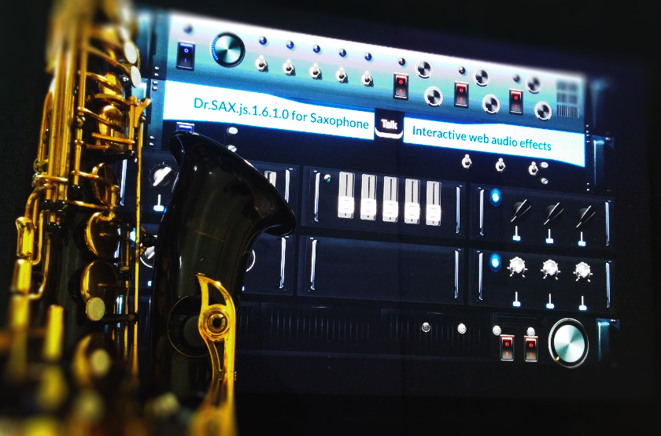
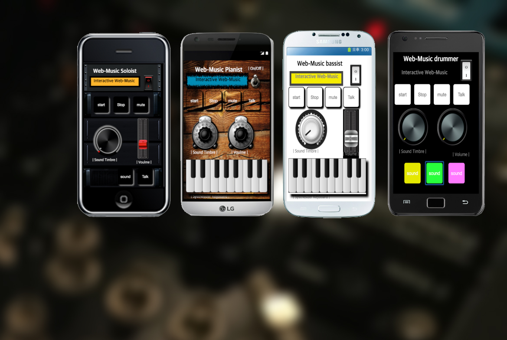

Computer Technology & Interactive music
Euy Shick Hong is a researcher in the The Laboratory of Musical ARt and TEchnology(MARTE). Enthusiastically, He is trying to study in the art of computer music that researching programming and interactive web application for music, interaction design, novel mobile web music, integrated musical interface design for real instrument, sound visualization(real instrument), physical computing with arduino, interactive networking system on the web and playing the saxophone.